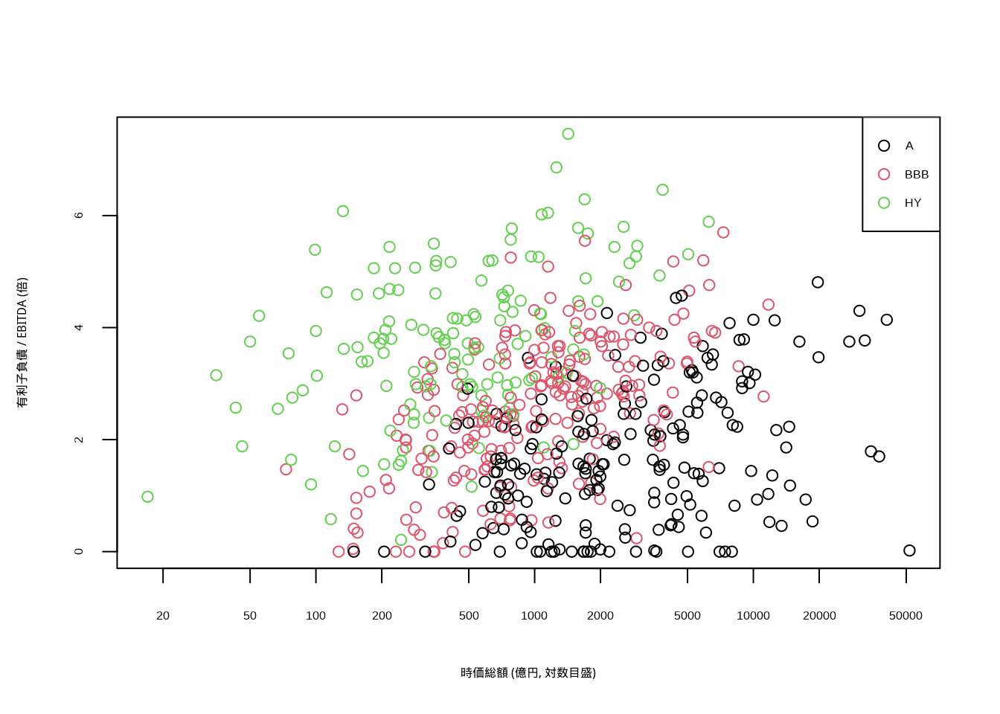
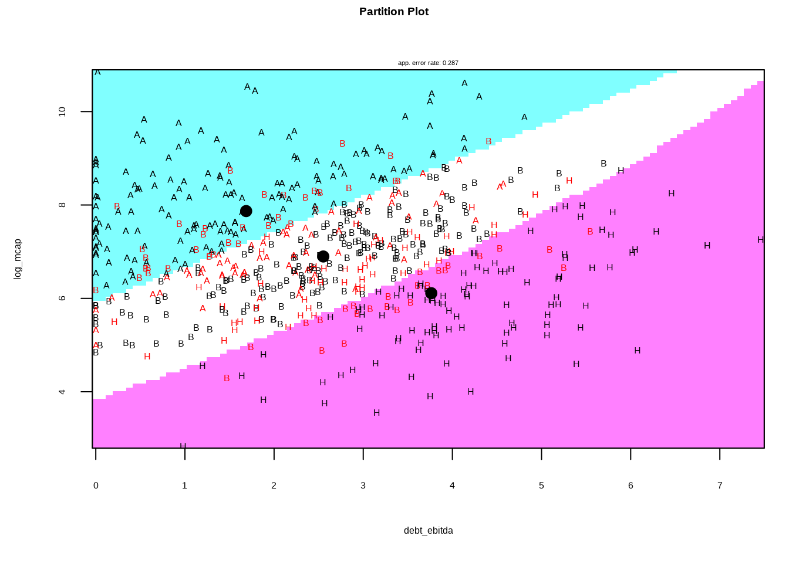
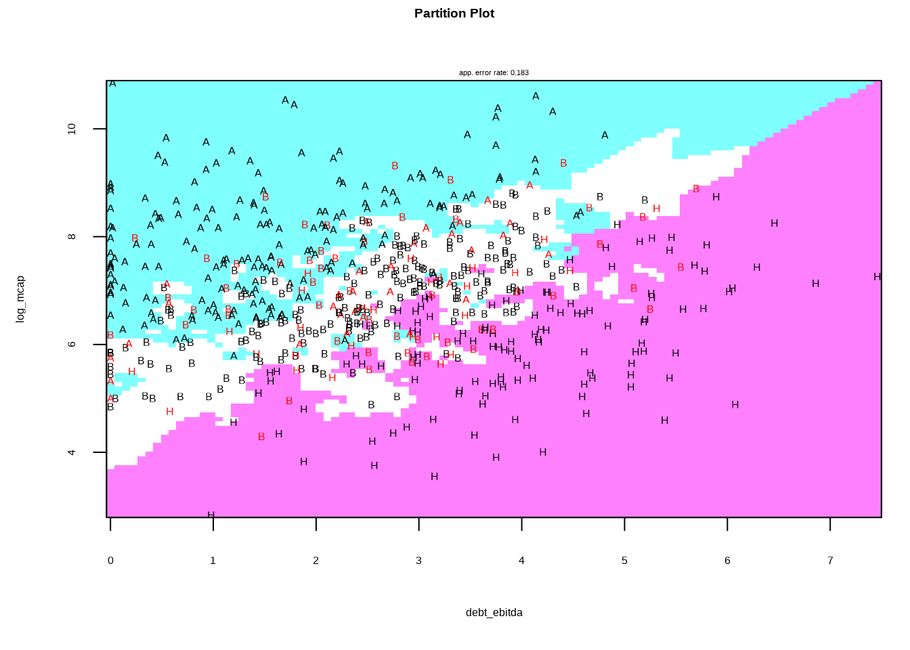
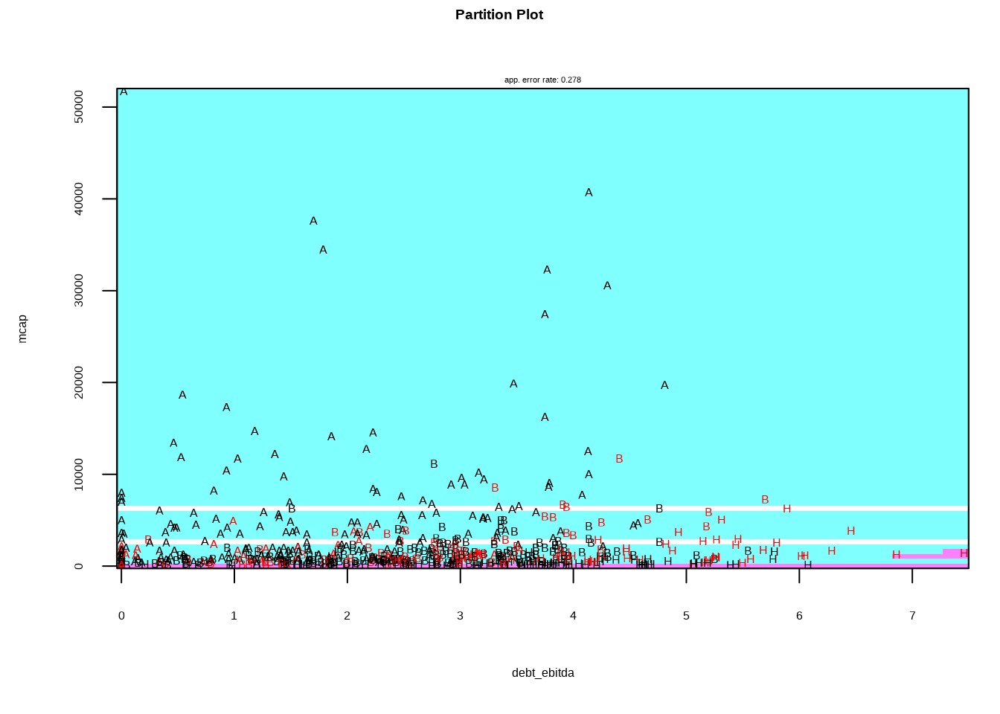
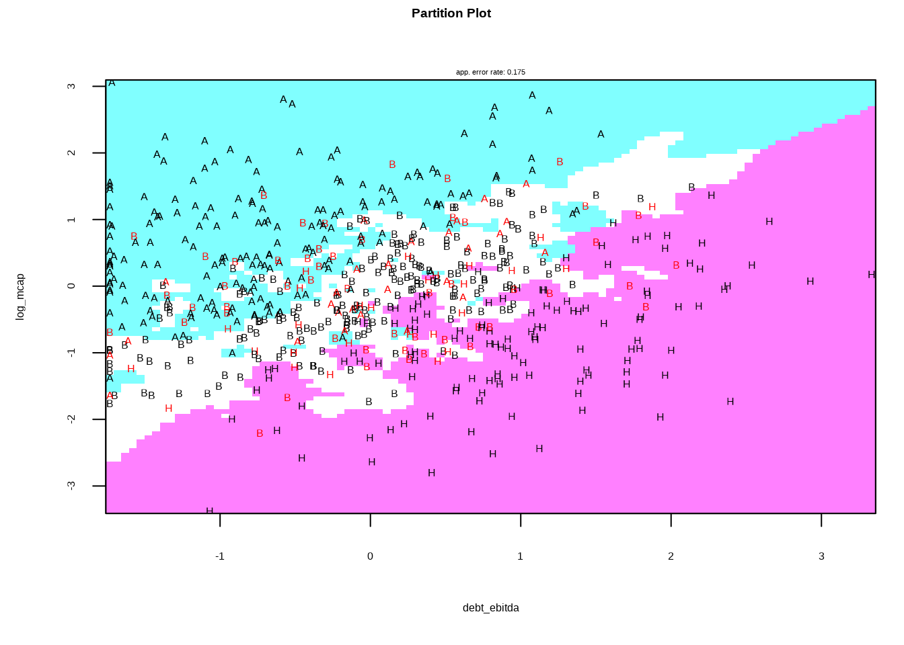
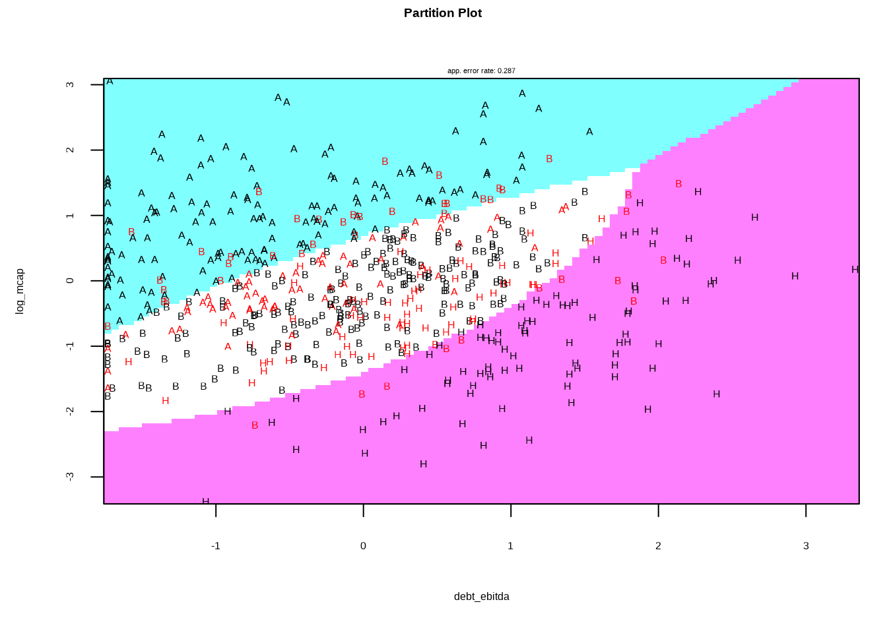

Chapter 8 判別分析
本章の内容は, 授業の R 演習スクリプト R_discrim_dist.R に対応する.
判別分析における標準的な手法である線形判別 (LDA), 2次判別 (QDA) は,
標準パッケージMASSに含まれている関数lda(), qda()で,
kNN (k近傍法) はパッケージclassに含まれている関数knn()で
実行することができる.
さらに, パッケージklaRを使うと, 2変数ずつの判別境界を可視化したり, ナイーブ・ベイズ法を実行したりできる.
8.1 線形判別・2次判別・kNN法: 米国株価指数の騰落
- 以下のコード作成の参考: ISLR2, Ch.4 (Lab: Classification Methods)
データ1: 米国S&P500 日次リターン・データ
Smarket: S&P500 の日次%リターン, 2001〜2005年 (1,250日)
- Year: 観測値の記録年 (2001--2005)
- Lag1〜Lag5: 1〜5日前の%リターン
- Volume: 出来高 (日次取引株式数, 10億株)
- Today: 当日の%リターン
- Direction: 相場の方向 (Down/Up, 2水準の因子)library(ISLR2)
names(Smarket)
#> [1] "Year" "Lag1" "Lag2" "Lag3" "Lag4" "Lag5"
#> [7] "Volume" "Today" "Direction"
dim(Smarket)
#> [1] 1250 9
summary(Smarket)
#> Year Lag1 Lag2 Lag3
#> Min. :2001 Min. :-4.922000 Min. :-4.922000 Min. :-4.922000
#> 1st Qu.:2002 1st Qu.:-0.639500 1st Qu.:-0.639500 1st Qu.:-0.640000
#> Median :2003 Median : 0.039000 Median : 0.039000 Median : 0.038500
#> Mean :2003 Mean : 0.003834 Mean : 0.003919 Mean : 0.001716
#> 3rd Qu.:2004 3rd Qu.: 0.596750 3rd Qu.: 0.596750 3rd Qu.: 0.596750
#> Max. :2005 Max. : 5.733000 Max. : 5.733000 Max. : 5.733000
#> Lag4 Lag5 Volume Today
#> Min. :-4.922000 Min. :-4.92200 Min. :0.3561 Min. :-4.922000
#> 1st Qu.:-0.640000 1st Qu.:-0.64000 1st Qu.:1.2574 1st Qu.:-0.639500
#> Median : 0.038500 Median : 0.03850 Median :1.4229 Median : 0.038500
#> Mean : 0.001636 Mean : 0.00561 Mean :1.4783 Mean : 0.003138
#> 3rd Qu.: 0.596750 3rd Qu.: 0.59700 3rd Qu.:1.6417 3rd Qu.: 0.596750
#> Max. : 5.733000 Max. : 5.73300 Max. :3.1525 Max. : 5.733000
#> Direction
#> Down:602
#> Up :648
#>
#>
#>
#>
cor(Smarket[, -9]) # 9列目 (Direction) は因子なので除く
#> Year Lag1 Lag2 Lag3 Lag4
#> Year 1.00000000 0.029699649 0.030596422 0.033194581 0.035688718
#> Lag1 0.02969965 1.000000000 -0.026294328 -0.010803402 -0.002985911
#> Lag2 0.03059642 -0.026294328 1.000000000 -0.025896670 -0.010853533
#> Lag3 0.03319458 -0.010803402 -0.025896670 1.000000000 -0.024051036
#> Lag4 0.03568872 -0.002985911 -0.010853533 -0.024051036 1.000000000
#> Lag5 0.02978799 -0.005674606 -0.003557949 -0.018808338 -0.027083641
#> Volume 0.53900647 0.040909908 -0.043383215 -0.041823686 -0.048414246
#> Today 0.03009523 -0.026155045 -0.010250033 -0.002447647 -0.006899527
#> Lag5 Volume Today
#> Year 0.029787995 0.53900647 0.030095229
#> Lag1 -0.005674606 0.04090991 -0.026155045
#> Lag2 -0.003557949 -0.04338321 -0.010250033
#> Lag3 -0.018808338 -0.04182369 -0.002447647
#> Lag4 -0.027083641 -0.04841425 -0.006899527
#> Lag5 1.000000000 -0.02200231 -0.034860083
#> Volume -0.022002315 1.00000000 0.014591823
#> Today -0.034860083 0.01459182 1.000000000まず, データセットを学習データとテストデータに2分割する (検証用セット・アプローチ). 具体的には, 時間軸に沿って, 2004年以前を学習用, 2005年をテスト用に使用する. 時系列データでは, 未来のデータで学習して過去を予測することにならないよう, ランダムではなく時間で分割する.
線形判別 (LDA)
- モデルの当てはめ
線形判別の実行は, パッケージMASSの関数lda()により行うことができる.
library(MASS)
fit_lda <- lda(Direction ~ Lag1 + Lag2, data = Smarket, subset = idx_train)
fit_lda # 事前確率, 各群の平均, 判別係数
#> Call:
#> lda(Direction ~ Lag1 + Lag2, data = Smarket, subset = idx_train)
#>
#> Prior probabilities of groups:
#> Down Up
#> 0.491984 0.508016
#>
#> Group means:
#> Lag1 Lag2
#> Down 0.04279022 0.03389409
#> Up -0.03954635 -0.03132544
#>
#> Coefficients of linear discriminants:
#> LD1
#> Lag1 -0.6420190
#> Lag2 -0.5135293fit_ldaの出力には, 各グループ (Down, Up) の事前確率 (学習データでの割合),
予測変数 (Lag1, Lag2) のグループ平均,
線形判別関数の係数などが格納されている.
- 判別 (外挿予測)
lda()の出力を関数predict()に入力することで,
判別結果 (class), およびその判断に使用した
事後確率 (posterior) が出力される.
pred_lda <- predict(fit_lda, Smarket_2005) # テストデータの判別 (外挿予測)
names(pred_lda) # class, posterior, x
#> [1] "class" "posterior" "x"
head(pred_lda$class)
#> [1] Up Up Up Up Up Up
#> Levels: Down Up
head(pred_lda$posterior)
#> Down Up
#> 999 0.4901792 0.5098208
#> 1000 0.4792185 0.5207815
#> 1001 0.4668185 0.5331815
#> 1002 0.4740011 0.5259989
#> 1003 0.4927877 0.5072123
#> 1004 0.4938562 0.5061438- 精度評価
学習済みモデルの性能は, テストデータを判別させ (外挿予測), 実際の値 (正解) と比較することで評価する. 分類精度は, 混同行列や正解率で確認することができる.
table(予測 = pred_lda$class, 実績 = Direction_2005) # 混同行列
#> 実績
#> 予測 Down Up
#> Down 35 35
#> Up 76 106
mean(pred_lda$class == Direction_2005) # 正解率
#> [1] 0.5595238事後確率 (posterior) の1列目は, 下落 (Down) の確率である.
判別結果は, 事後確率が大きい方のクラスに割り当てたものである (2クラスの場合, しきい値0.5).
pred_lda$posterior[1:20, 1]
#> 999 1000 1001 1002 1003 1004 1005 1006
#> 0.4901792 0.4792185 0.4668185 0.4740011 0.4927877 0.4938562 0.4951016 0.4872861
#> 1007 1008 1009 1010 1011 1012 1013 1014
#> 0.4907013 0.4844026 0.4906963 0.5119988 0.4895152 0.4706761 0.4744593 0.4799583
#> 1015 1016 1017 1018
#> 0.4935775 0.5030894 0.4978806 0.4886331
pred_lda$class[1:20]
#> [1] Up Up Up Up Up Up Up Up Up Up Up Down Up Up Up
#> [16] Up Up Down Up Up
#> Levels: Down Up
sum(pred_lda$posterior[, 1] >= 0.5) # 下落と予測した日数
#> [1] 70
sum(pred_lda$posterior[, 1] > 0.9) # 下落確率が 0.9 を超えた日数
#> [1] 0
max(pred_lda$posterior[, 1]) # 下落確率の最大値
#> [1] 0.520235下落確率の最大値でも0.5をわずかに上回る程度であり, モデルは「確信を持って」判別できていない. 過去のリターンから翌日の騰落を当てるのは非常に難しい (効率的市場仮説と整合的).
2次判別 (QDA)
2次判別は, パッケージMASSの関数qda()により行うことができる.
操作はlda()と同様である.
fit_qda <- qda(Direction ~ Lag1 + Lag2, data = Smarket, subset = idx_train)
fit_qda
#> Call:
#> qda(Direction ~ Lag1 + Lag2, data = Smarket, subset = idx_train)
#>
#> Prior probabilities of groups:
#> Down Up
#> 0.491984 0.508016
#>
#> Group means:
#> Lag1 Lag2
#> Down 0.04279022 0.03389409
#> Up -0.03954635 -0.03132544
pred_qda <- predict(fit_qda, Smarket_2005)
table(予測 = pred_qda$class, 実績 = Direction_2005)
#> 実績
#> 予測 Down Up
#> Down 30 20
#> Up 81 121
mean(pred_qda$class == Direction_2005)
#> [1] 0.5992063学習済みモデルのパラメータ推定値は
lda()やqda()の出力に格納されており, これらから
判別関数や判別境界の形を知ることができる.
fit_lda$scaling # 線形判別関数の係数
hist(predict(fit_lda)$x) # 判別得点
fit_lda$means # グループ平均
fit_lda$prior # 事前確率ここで用いたSmarketは時系列データなので, 時間的に古いものを学習用,
新しいものをテスト用とした.
時系列でない一般のデータの場合, データの分割は通常ランダムに行うが, それでも
学習済みモデルの性能はデータの分割の仕方に依存してしまう.
そこで, 分割への依存を軽減し, 予測精度の評価の信頼性を高めるために, 交差検証 (クロス・バリデーション) を行うことが推奨される.
関数lda()やqda()は引数CVを持っていて, これをTRUEと設定すると, LOOCV を実行する (デフォルトはFALSE).
(Smarketは時系列データなので, LOOCV の使用は適切でない. ここでは省略する.)
LOOCV (Leave-One-Out Cross-Validation)
- 交差検証法の一種. 1個抜き交差検証
- データセットの各データ点を1つずつテスト用データとして取り出し, 残りを学習用データとしてモデルを当てはめ, 取り出した点を予測する.
- これをデータセットの全てのデータ点について繰り返し, モデルの性能を評価する.kNN法
kNN法は, 標準パッケージclassの関数knn()によって実行できる.
kNN法では, 近傍の数\(k\)を与える必要がある.
knn()へのデータの与え方は, lda(), qda()とは異なり,
学習用の予測変数, テスト用の予測変数, 学習用の目的変数 (ラベル) を順に与える.
library(class)
train_x <- cbind(Smarket$Lag1, Smarket$Lag2)[idx_train, ]
test_x <- cbind(Smarket$Lag1, Smarket$Lag2)[-idx_train, ]
train_direction <- Smarket$Direction[idx_train]ここでは\(k=1\)とした例を示す.
距離が同じ点が複数ある場合にはランダムに選ばれるので, 結果を再現できるようset.seed()を指定しておく.
set.seed(1)
pred_knn <- knn(train_x, test_x, train_direction, k = 1)
table(予測 = pred_knn, 実績 = Direction_2005)
#> 実績
#> 予測 Down Up
#> Down 43 58
#> Up 68 83
mean(pred_knn == Direction_2005)
#> [1] 0.5- 交差検証 (LOOCV)
パッケージclassには, 関数knn.cv()が用意されている.
これは, 学習データの各点を, その点を除いた残りの点で分類する (LOOCV).
返り値は各点の分類結果なので, 正解率は自分で計算する.
res_knn3 <- data.frame(y = train_direction, yhat = knn.cv(train_x, train_direction,
k = 3))
table(res_knn3)
#> yhat
#> y Down Up
#> Down 232 259
#> Up 249 258
mean(res_knn3$y == res_knn3$yhat) # LOOCV による正解率
#> [1] 0.490982なお, 上でも触れたように, 時系列データに対して LOOCV などの交差検証を行う際には注意が必要である. 将来のデータを学習して過去のデータを予測するようなデータの使い方は, 将来予測を目的とする場合には適切ではない. ここでは, あくまで操作の参考として示している.
kNN法は\(k\)の大きさによって結果が左右されるので, 適切な\(k\)の選択が重要である.
acc_k <- sapply(1:10, function(k) mean(knn.cv(train_x, train_direction, k = k) ==
train_direction))
round(acc_k, 3)
#> [1] 0.508 0.519 0.491 0.489 0.495 0.500 0.495 0.508 0.483 0.489\(k\)を変えても, 正解率は50%前後のままである. LDA・QDA の結果と合わせて, 前日・前々日のリターンから翌日の騰落を予測するのは難しいことが分かる.
8.2 klaR パッケージによる判別境界の可視化: 社債発行体の格付
データ2: 社債発行体の格付データ (仮想)
- rating.csv, 600社
- rating: 格付 (A, BBB, HY: 投機的等級)
- mcap: 時価総額 (億円)
- debt_ebitda: 有利子負債 / EBITDA (倍)
- int_coverage: インタレスト・カバレッジ・レシオ (倍)
- roa: 総資産利益率 (%)
- equity_ratio: 自己資本比率 (%)
- equity_vol: 株価ボラティリティ (%)格付は順序のあるカテゴリーであり, 3クラスの判別問題となる.
factor()の引数levelsで, 格付の高い順に水準を並べておく.
rating <- read.csv("class/rating.csv", stringsAsFactors = TRUE)
rating$rating <- factor(rating$rating, levels = c("A", "BBB", "HY"))
summary(rating)
#> rating mcap debt_ebitda int_coverage roa
#> A :210 Min. : 17.0 Min. :0.000 Min. : 0.90 Min. :-3.100
#> BBB:240 1st Qu.: 510.8 1st Qu.:1.455 1st Qu.: 5.80 1st Qu.: 2.197
#> HY :150 Median : 1096.0 Median :2.520 Median : 10.45 Median : 4.000
#> Mean : 2545.7 Mean :2.552 Mean : 13.96 Mean : 4.023
#> 3rd Qu.: 2572.5 3rd Qu.:3.603 3rd Qu.: 17.80 3rd Qu.: 5.865
#> Max. :51758.0 Max. :7.460 Max. :150.00 Max. :11.410
#> equity_ratio equity_vol
#> Min. : 5.00 Min. :10.00
#> 1st Qu.:36.15 1st Qu.:24.40
#> Median :44.30 Median :30.05
#> Mean :44.69 Mean :30.64
#> 3rd Qu.:53.83 3rd Qu.:36.83
#> Max. :83.10 Max. :54.80
plot(rating$mcap, rating$debt_ebitda, col = rating$rating, log = "x", xlab = "時価総額 (億円, 対数目盛)",
ylab = "有利子負債 / EBITDA (倍)")
legend("topright", legend = levels(rating$rating), col = 1:3, pch = 1)
規模が小さく (時価総額が小さく), 負債の重い (有利子負債/EBITDA が大きい) 企業ほど, 格付が低い傾向がある.
関数partimat()による判別境界の可視化
パッケージklaRの関数partimat()は, 2変数ずつの判別境界を可視化する.
判別分析やそれ以外の多様なクラス分類手法をサポートしている.
- 引数
methodで指定: “lda”, “qda”, “rpart”, “naiveBayes”, “rda”, “sknn”, “svmlight”
時価総額は右に大きく歪んだ分布 (数十〜5万億円) で, そのままでは小さい値の領域にデータが密集してしまい, 判別にも可視化にも不都合である. そこで, 判別の前に対数変換しておく (上の散布図も対数目盛で描いた).
図の中の記号は各企業の格付 (A, B = BBB, H = HY) であり, 赤字は誤って判別された企業を表す.
図の上の “app. error rate” は, 学習データ自身で評価した誤判別率 (見かけの誤判別率) である.
ここでは, 時価総額の対数 (log_mcap) と有利子負債/EBITDA (debt_ebitda) の2変数を使う.
# install.packages('klaR')
library(klaR)
rt2 <- rating[, c("rating", "log_mcap", "debt_ebitda")]
partimat(rating ~ ., data = rt2, method = "lda") # 線形判別


LDA の判別境界は直線, QDA の判別境界は曲線になる. kNN の判別境界は, より複雑な形になる.
kNN法は, 点と点の距離に基づいて分類するので, 変数の尺度 (値の範囲) の影響を受ける. 例えば, 時価総額を対数変換せずにそのまま使うと, 時価総額 (数十〜5万程度) の値の範囲が負債倍率 (0〜7.5程度) よりはるかに大きいため, 距離がほぼ時価総額の差だけで決まり, 判別境界が時価総額の軸に沿った「横じま」になってしまう.

距離に基づく手法では, 変数を標準化 (平均0, 標準偏差1) して, 尺度をそろえるのが基本である.
sapply(rt2[, -1], sd) # 対数変換後の2変数の標準偏差
#> log_mcap debt_ebitda
#> 1.245043 1.471843
rt2s <- data.frame(rating = rt2$rating, log_mcap = scale(rt2$log_mcap), debt_ebitda = scale(rt2$debt_ebitda))
partimat(rating ~ ., data = rt2s, method = "sknn")
今回は, 対数変換後の2変数の標準偏差が近い (1.2 と 1.5) ので, 標準化の前後で境界はほとんど変わらない. 尺度が大きく異なる変数を使う場合には, 標準化が不可欠である.
ナイーブ・ベイズ法
パッケージklaRには, ナイーブ・ベイズ法を実行する関数NaiveBayes()も用意されている.
ナイーブ・ベイズ法は, 各クラスの中で予測変数どうしが独立であると仮定する.
fit_nb <- NaiveBayes(rating ~ ., data = rt2s) # usekernel = FALSE (デフォルト) → 正規分布
table(予測 = predict(fit_nb)$class, 実績 = rt2s$rating)
#> 実績
#> 予測 A BBB HY
#> A 144 31 0
#> BBB 66 195 61
#> HY 0 14 89関数partimat()において, method = "naiveBayes"と指定してもよい.

全ての財務指標を使った判別: LDA vs QDA
最後に, 6つの財務指標をすべて使って判別し, 学習用 (400社) とテスト用 (200社) に分けて, LDA と QDA の予測精度を比べる.
インタレスト・カバレッジ・レシオも右に歪んだ分布なので, 対数変換しておく (時価総額の対数 log_mcap は作成済み).
rating$log_icr <- log(rating$int_coverage)
set.seed(1)
tr <- sample(nrow(rating), 400)
fo <- rating ~ log_mcap + debt_ebitda + log_icr + roa + equity_ratio + equity_vol
fit_lda2 <- lda(fo, data = rating, subset = tr)
fit_qda2 <- qda(fo, data = rating, subset = tr)
pred_lda2 <- predict(fit_lda2, rating[-tr, ])$class
pred_qda2 <- predict(fit_qda2, rating[-tr, ])$class
table(予測 = pred_lda2, 実績 = rating$rating[-tr])
#> 実績
#> 予測 A BBB HY
#> A 57 3 0
#> BBB 17 67 14
#> HY 0 6 36
c(LDA = mean(pred_lda2 == rating$rating[-tr]), QDA = mean(pred_qda2 == rating$rating[-tr]))
#> LDA QDA
#> 0.80 0.822変数だけの場合に比べて, 正解率は大きく上がる. 混同行列を見ると, 誤判別の多くは「A と BBB」「BBB と HY」のように隣の格付との間で起きており, A を HY と判別するような大きな誤りはない. 格付が順序のあるカテゴリーであることを反映している (順序を明示的に扱うモデルとして, 順序ロジット・モデルなどもある).
(自主課題)
- kNN法の\(k\)を変えて (例えば
partimat(..., method = "sknn", kn = 10)), 判別境界がどう変わるか確かめてみよう. - 全ての財務指標を使った判別で, kNN法 (変数を標準化した上で) やナイーブ・ベイズ法の正解率も求め, LDA・QDA と比べてみよう.